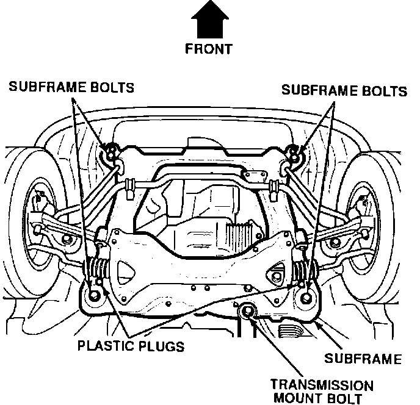
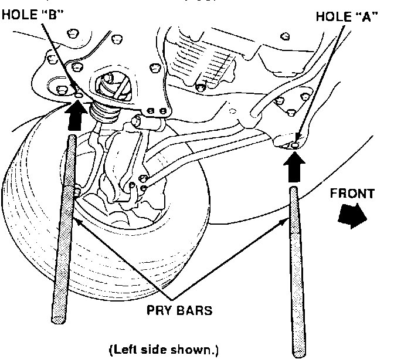
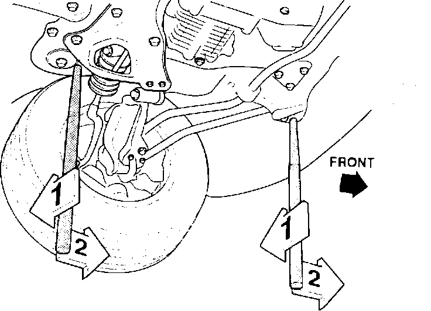

Alignment - Drifts to One Side
September 15, 1992BULLETIN NO.
92-024
YEAR
1992
MODEL
VIGOR
VIN APPLICATION
ALL
Vigor Drifts to One Side
SYMPTOM
Some Vigors may drift to one side while traveling at highway speeds on level surfaces.
PROBABLE CAUSE
The difference in side-to-side front wheel camber is greater than 25 minutes, causing the car to drift towards the side with more positive camber.
CORRECTIVE ACTION

Shift the subframe to equalize the camber.
1. Raise the car on a lift to a suitable working height.
2. Remove the two plastic plugs from the subframe.
3. Loosen the 12 mm transmission mount bolt and the four 14 mm subframe bolts five turns each; do not remove them.

4. Insert pry bars through holes "A" and "B" on one side of the subframe and into the body.
NOTE:
Use the holes in the subframe on the same side as the drift. For example, if the car drifts to the left, use the left side holes.

5. With the help of an assistant, push both pry bars in the same direction as the drift, then push the pry bars towards the front of the car.
6. While applying force to the pry bars, tighten the subframe bolts and the transmission bolt to the specified torque.
Subframe Bolts:
97 N-m (9.7 kg-m, 70 lb.ft.)
Trans. Mount Bolt:
65 N-m (6.5kg-m, 47 lb.ft.)
7. Reinstall the plastic plugs.
8. Check the front camber on an approved alignment rack. Refer to Service Bulletin 89-020 for minimum equipment specifications. The side-to-side camber difference should not exceed 25 minutes.
WARRANTY CLAIM INFORMATION
In warranty:
The normal warranty applies.
Out of warranty:
Any repair performed after warranty expiration may be eligible for goodwill consideration by the District Service Manager You must request consideration, and get the DSM's decision, before starting work.
Operation number: 414051
Flat rate time: 0.8 hour
Failed P/N: 50200-SL5-A00
Defect code: 049
Contention code: B04